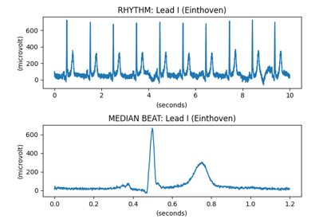

Image processing¶
These examples illustrate the image processing available in pydicom which can be applied to DICOM images.


Decode and plot Waveform Data

Load CT slices and plot axial, sagittal and coronal images
Load CT slices and plot axial, sagittal and coronal images